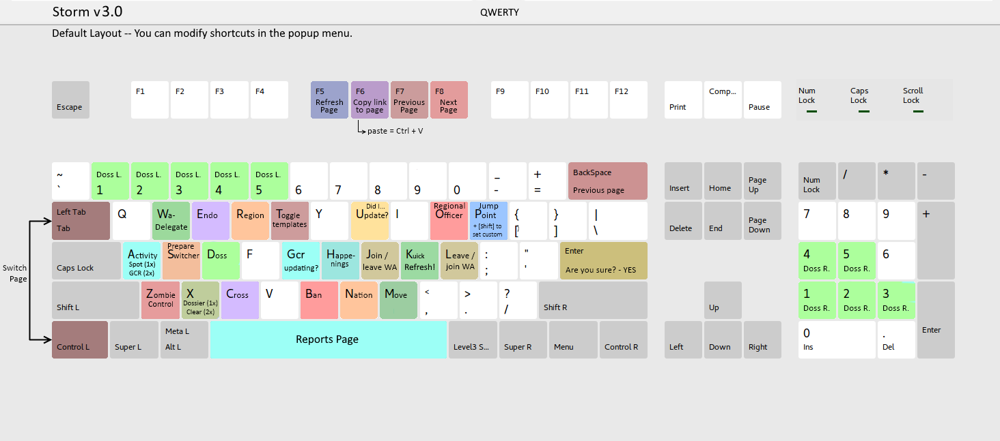

KEY LIST
Keys native to your browser included.
| Key(s) | Function |
|---|---|
| [Enter] | Confirm dialogue (useful in the World Assembly). |
| [Backspace] | Go to the previous page. |
| [Spacebar] | View the reports page. 2x for Ajax2 version. |
| [Ctrl] + [Tab] | Switch between browser tabs. |
| [Ctrl] + [W] | Close this browser tab. |
| [F5] | Refresh this page. |
| [F6] | Copy link to this page. Use [Ctr]+[V] to paste. |
| [F7] | Go to the previous page. |
| [F8] | Go to the next page. |
| WARNING ⚠ | Reload the page after clicking back/forward browser buttons, otherwise hotkeys will not work and the page may be outdated. This is not needed for [F7], [Backspace] and [F8]. |
| [1-5] | Select and add the first nation in a happening (Activity or Reports Page) to your dossier. |
| Keypad [1-5] | Select and add the second nation in a happening (Activity or Reports Page) to your dossier. |
| [A] | View the activity page with the filters "World", "Move", "Member" and "Endorsements". This is ideal for spotting. Press again to view the activity page without filters. This is handy to see if a GCR is updating. |
| [C] | Open the first 10 nations endorsing this nation in a separate tab. This function is limited to 10 nations to satisfy NS script rules. If your browser warns you about popups, be sure to allow them for "https://www.nationstates.net". |
| [B] | Ban and eject this nation. |
| [D] | Add this nation or region to your dossier. |
| [E] | Endorse this nation. |
| [G] | What's updating? |
| [H] | Region Happenings |
| [J] | Apply/Join/Leave the World Assembly. |
| [L] | Apply/Join/Leave the World Assembly. |
| [M] | Move to this region. |
| [N] | The nation you're logged into. |
| [O] | Opens regional controls. There, press to appoint yourself "Pilot" with permissions over Appearance, Communications, Embassies and Polls. If you modify another officer, press to dismiss them. |
| [P] | Open jump point. Press again to move there. Hold shift and this key to set your custom jump point. Default: Artificial Solar System (4th from the end). |
| [R] | The region your nation is in. |
| [S] | Prepare Switchers (press 4 times) |
| [T] | Toggle Templates on and off |
| [U] | A quick way to check if your nation has updated. |
| [W] | Opens the region you are in, when pressed there goes to its WA Delegate. |
| [X] | Open your dossier. Press again to clear the nations in it. |
| [Z] | Zombie control. |
